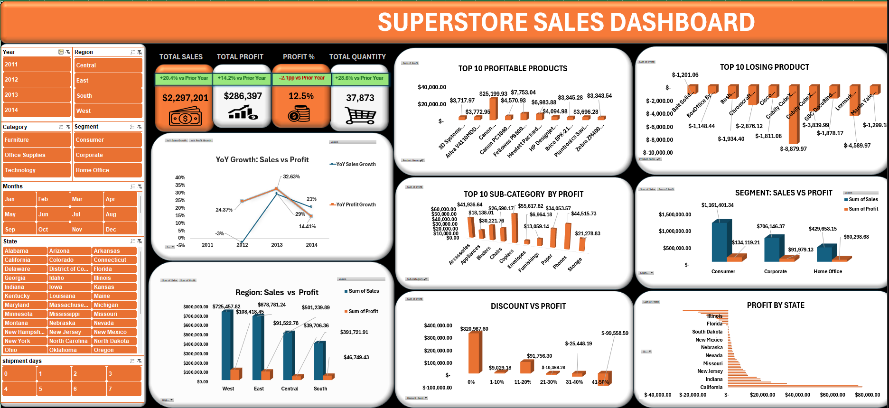

Analysed 9,994 Total Orders📦, 4 Regions🌍 Covered across the country, 3 Product Categories🗂️, 17 Sub-categories📊, Tracked Profit Margin💰 and Data Cleaned via Power Query.
This project is a comprehensive, end-to-end data analytics case study built on the globally recognised Sample Superstore dataset "a rich collection of real-world retail transactions spanning four regions",three major product categories, 17 sub-categories, and multiple customer segments across the United States. The goal was simple but powerful: take thousands of rows of raw, unstructured sales data and transform it into a clear, interactive, decision-ready Excel dashboard that any business stake-holder from a sales manager to a CEO could open and immediately understand. The project covers the full data analytics lifecycle from data importation and cleaning, through transformation and modelling, all the way to visual storytelling and insight generation. Every step was intentional. Every chart tells a story. Every KPI answers a real business question. This is not just a dashboard. It is a business intelligence tool built entirely inside Microsoft Excel, proving that you do not need expensive software to deliver executive-level insights. With the right skills, Excel alone can reveal the difference between a profitable business decision and a costly mistake. The superstore in this dataset was unknowingly losing money on certain products while over-investing in underperforming regions. This dashboard makes those problems visible, measurable, and also actionable,turning raw numbers into a roadmap for smarter business strategy.
The superstore had no clear visibility into which regions, categories, and customer segments were driving profit versus bleeding money. Decision-makers were flying blind.
These insights could save a real business from continuing to push unprofitable products and redirect marketing budget to high-performing regions and segments, turning data into decisions.

View Live Dashboard